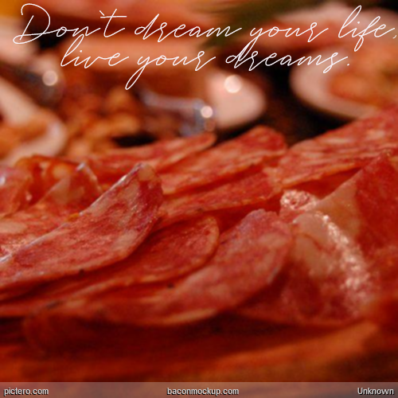
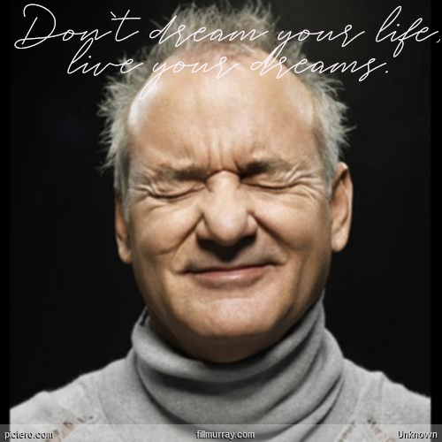

Pictero - Generator für Poesie-Album-Sprüche
Pictero ist eine Persiflage auf die moralinsauren, romantischen oder schwülstigen Sprüche, die dir auf Delphin-Postern, in Poesie-Alben und mittlerweile auch in sozialen Netzwerken begegnen. Mit Pictero kannst du derartige Texte über Bilder legen, die entweder ganz gut passen. Dazu gehören z.B. Strandbilder mit einem viel zu starken Blur-Effekt. Oder du nimmst Bilder, die überhaupt gar nicht passen, wie z.B. ein Stück Fleisch, Katzen oder ein Porträt von Bill Murray.

Don’t dream your life, live your dreams. Ok.
Pictero greift dazu selber auf eine Menge öffentlich zugänglicher Bild-Generatoren zurück:
- picsum.photo
- baconmockup.com
- placebeard.it
- fillmurray.com
- placekitten.com
- placecage.com
- placebear.com
- stevensegallery.com
- placezombie.com
- placeimg.com
Ein weiteres Feature ist die direkte Anbindung an Twitter. Man kann eine Tweet-Id oder URL zu einem Tweet angeben, um so direkt den Text zu visualisieren.
Als i-Tüpfelchen kannst du den Text maximalironisch mit einer Comic-ähnlichen Schriftart oder einer Handschrift verzieren und das Bild dann herunterladen um die Nachricht deinerseits publikumswirksam an den Mann oder die Frau zu bringen.
Viel Spaß.

Bill Murray - er kann es noch